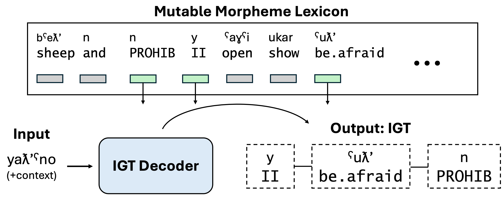
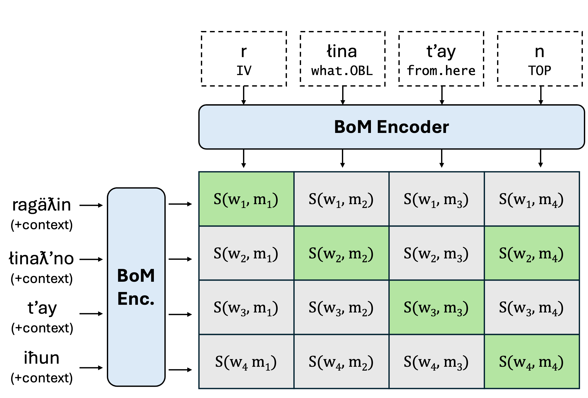
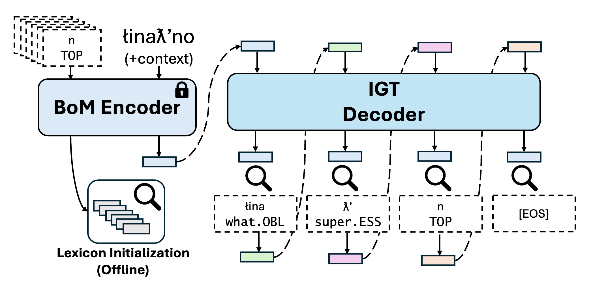
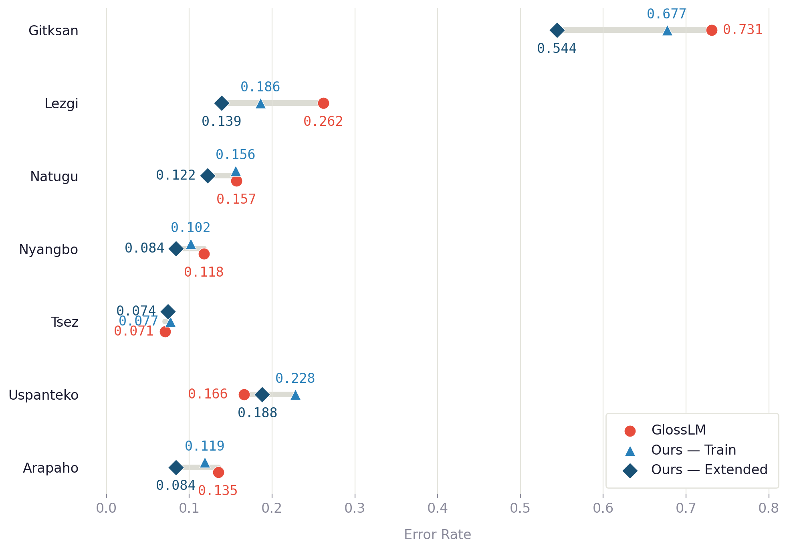

CWoMP
Morpheme Representation Learning for Interlinear Glossing
*Equal contribution · 1Carnegie Mellon University · 2University of Colorado Boulder
arXiv 2026

TL;DR: We propose CWoMP, which treats morphemes as atomic form-meaning units with learned representations, enabling interpretable and efficient interlinear glossing that users can improve at inference time by expanding a lexicon — without retraining.
Abstract
Interlinear glossed text (IGT) is a standard notation for language documentation which is linguistically rich but laborious to produce manually. Recent automated IGT methods treat glosses as character sequences, neglecting their compositional structure…
Method Overview
CWoMP uses a two-stage architecture. The first component is a BoM encoder: a contrastively trained dual encoder (built on a pretrained multilingual encoder) that maps words-in-context and morpheme-gloss pairs into a shared embedding space. It is trained with a multi-positive InfoNCE objective to recognize which morphemes are contained in a given word, producing a discrete codebook of morpheme segments and their glosses.
The second component is an IGT decoder: a lightweight autoregressive transformer that generates the morpheme sequence for each input word by retrieving entries from this codebook. At each step, the decoder's hidden state is scored against all entries in a precomputed lexicon of morpheme embeddings (produced by the frozen BoM encoder), and the nearest neighbor is selected. Because predictions are constrained to codebook entries, the model cannot hallucinate unseen morpheme types. Crucially, users can expand this lexicon at any time without retraining — immediately improving coverage.


Interactive Glossing Browser
Explore interlinear glossing examples across seven languages. Each example shows the original transcript, translation, morpheme segmentation, and per-method gloss predictions (GT, CWoMP, GlossLM). Prediction cells are color-coded: red = incorrect (unshaded = correct).
Results
We evaluate using Morpheme Error Rate (MER) across seven typologically diverse low-resource languages. CWoMP achieves competitive or superior performance compared to GlossLM across most languages, with consistent improvements in the extended-lexicon setting. Gains are particularly pronounced for mid- to low-resource languages: on Lezgi, CWoMP reduces MER from 0.26 to 0.14–0.19, and on Gitksan—with only 31 training examples—the extended lexicon setting reduces MER from 0.68 to 0.54. Performance in the extended lexicon setting consistently outperforms the train lexicon setting, validating the practical workflow of expanding a lexicon without retraining.

Citation
If you use CWoMP in your work, please cite:
@misc{alper2026cwomp,
title = {{CWoMP}: Morpheme Representation Learning for Interlinear Glossing},
author = {Morris Alper and Enora Rice and Bhargav Shandliya and Alexis Palmer and Lori Levin},
year = {2026},
eprint = {XXXX.XXXXX},
archivePrefix = {arXiv}
}